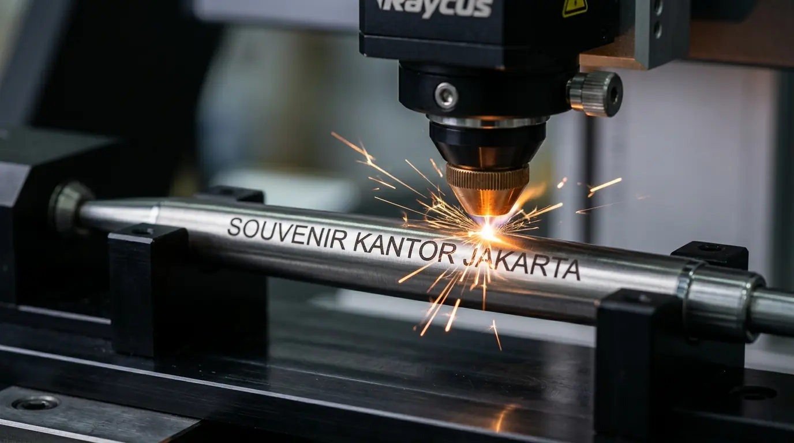

Pulpen Metal Custom Logo Eksklusif untuk Souvenir VIP Korporat
 Tim Corporate Gift
3 September 2026
4 Menit Baca
Tim Corporate Gift
3 September 2026
4 Menit Baca
Pulpen metal custom logo adalah instrumen tulis premium berbahan logam yang dihiasi ukiran logo perusahaan untuk cenderamata tingkat eksekutif. Artikel ini mengulas keunggulan grafir laser, perbedaan mekanisme, opsi kemasan, hingga langkah pemesanan yang tepat untuk souvenir VIP korporat.
Pulpen metal custom logo adalah instrumen tulis premium berbahan logam yang dihiasi ukiran logo perusahaan untuk cenderamata tingkat eksekutif.
- Memancarkan kesan elegan dan profesionalisme tinggi bagi para penerima VIP.
- Dibuat menggunakan teknik grafir laser sehingga ukiran logo tidak akan terkelupas.
- Dilengkapi opsi kotak presentasi eksklusif untuk meningkatkan nilai estetika.
- Investasi jangka panjang untuk memperkuat hubungan bisnis dengan mitra utama.
Mengapa Pulpen Metal Custom Logo Menjadi Pilihan Utama Souvenir VIP?
Pulpen metal custom logo memberikan bobot dan tekstur premium yang secara langsung meningkatkan persepsi nilai (perceived value) dari perusahaan pemberi.
Riset Indonesian Executive Gift Preferences 2025 mengungkapkan bahwa 91% jajaran direksi lebih menyukai souvenir kantor berbasis logam dibandingkan bahan sintetis. Material aluminium, kuningan, atau stainless steel memastikan pulpen tahan benturan dan nyaman digunakan dalam penandatanganan dokumen penting.
Dua keunggulan utama pulpen berbahan metal:
- Daya Tahan Permanen: Bodi logam tidak mudah patah dan tahan pemakaian bertahun-tahun.
- Hasil Finishing Presisi: Menggunakan teknologi ukir laser yang memberikan kilau warna alami logam di area logo.
Bagaimana Memilih Mekanisme dan Kemasan Pulpen Metal yang Tepat?
Pemilihan mekanisme pen dan jenis kotak kemasan berperan besar dalam menciptakan impresi pertama yang mendalam saat penyerahan cenderamata.
Mekanisme Putar (Twist) vs Tutup (Cap)
Pulpen metal dengan mekanisme putar menyajikan kepraktisan tanpa risiko kehilangan penutup. Sementara itu, tipe dengan tutup (cap pen) kerap dipadukan dengan jenis tinta rollerball cair untuk pengalaman menulis yang sangat halus.
Kemasan Hardbox dan Bludru
Menambahkan kotak berlapis kain bludru atau hardbox berlapis pita kustom akan mengubah pulpen metal sederhana menjadi satu set hadiah bernilai tinggi yang siap diserahkan pada momen istimewa.

Apa Saja Langkah Memesan Pulpen Metal Custom Logo?
Proses pemesanan mencakup pemilihan tipe bodi, persetujuan sampel desain digital, hingga proses ukir laser dan kontrol kualitas akhir.
Pilihan Model
Tentukan warna dasar bodi (hitam doff, silver krom, atau rose gold) sesuai identitas brand.
Validasi File Logo
Kirimkan logo format vektor (AI, EPS, SVG) untuk memastikan kedalaman ukir laser optimal.
Pemeriksaan Sampel
Tinjau hasil ukiran pada sampel fisik sebelum produksi penuh dilakukan untuk menjamin kepuasan.
Untuk menjawab pertanyaan "Di mana pesan pulpen metal VIP di Jakarta?", Souvenir Kantor Jakarta menjadi mitra terpercaya dengan pengalaman memproduksi pulpen metal eksklusif untuk berbagai perusahaan ternama. Kami memastikan setiap detail ukiran, kemasan, dan kualitas produk memenuhi standar tertinggi.
Butuh Pulpen Metal VIP untuk Korporat?
Konsultasikan kebutuhan souvenir VIP perusahaan Anda. Dapatkan rekomendasi model, kemasan, dan penawaran harga terbaik dari tim kami.
Konsultasi SekarangPertanyaan Populer Seputar Pulpen Metal Custom Logo
Kesimpulan Praktis
Pulpen metal custom logo adalah investasi cenderamata terbaik untuk memperkuat hubungan bisnis kelas atas dan membangun citra profesional yang kokoh.
Berikan impresi terbaik kepada mitra VIP Anda bersama Souvenir Kantor Jakarta. Kami menghadirkan koleksi pulpen metal premium dengan pengerjaan grafir laser terbaik di kelasnya. Segera konsultasikan kebutuhan souvenir VIP perusahaan Anda bersama tim layanan pelanggan kami hari ini.